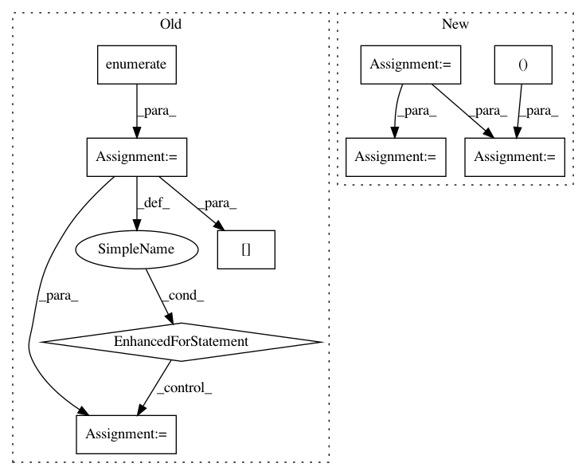

8cb97248c6fe5b84312a3e4f74c20bfb19cc8d0e,skbio/tree/_nj.py,,_compute_collapsed_dm,#Any#Any#Any#Any#Any#,186
Before Change
out_ids = [new_node_id]
out_ids.extend([e for e in dm.ids if e not in (i, j)])
result = np.zeros((out_n, out_n))
for idx1, out_id1 in enumerate(out_ids[1:]):
result[0, idx1 + 1] = result[idx1 + 1, 0] = _otu_to_new_node(
dm, i, j, out_id1, disallow_negative_branch_length)
for idx2, out_id2 in enumerate(out_ids[1:idx1+1]):
result[idx1+1, idx2+1] = result[idx2+1, idx1+1] = \
dm[out_id1, out_id2]
return DistanceMatrix(result, out_ids)
def _lowest_index(dm):
After Change
out_ids.extend([e for e in dm.ids if e not in (i, j)])
result = np.zeros((out_n, out_n))
// pre-populate the result array with known distances
ij_indexes = [dm.index(i), dm.index(j)]
result[1:, 1:] = np.delete(np.delete(dm.data, ij_indexes, axis=0),
ij_indexes, axis=1)
// calculate the new distances from the current DistanceMatrix
k_to_u = 0.5 * (dm[i] + dm[j] - dm[i, j])
// set negative branches to 0 if specified
if disallow_negative_branch_length:
k_to_u[k_to_u < 0] = 0
// drop nodes being joined
k_to_u = np.delete(k_to_u, ij_indexes)
// assign the distances to the result array
result[0] = result[:, 0] = np.concatenate([[0], k_to_u])
return DistanceMatrix(result, out_ids)
def _lowest_index(dm):
In pattern: SUPERPATTERN
Frequency: 5
Non-data size: 9
Instances
Project Name: biocore/scikit-bio
Commit Name: 8cb97248c6fe5b84312a3e4f74c20bfb19cc8d0e
Time: 2017-04-27
Author: sdbrown@gmail.com
File Name: skbio/tree/_nj.py
Class Name:
Method Name: _compute_collapsed_dm
Project Name: pytorch/tnt
Commit Name: ba256835a4f33d9139a70b6440c3223123132bc8
Time: 2017-08-24
Author: swetha.tanamala@gmail.com
File Name: torchnet/meter/confusionmeter.py
Class Name: ConfusionMeter
Method Name: add
Project Name: idaholab/raven
Commit Name: 438b2a63d195c8f5ccecae35d577d8bfde354406
Time: 2020-08-22
Author: mohammad.abdo@inl.gov
File Name: framework/Optimizers/GeneticAlgorithm.py
Class Name: GeneticAlgorithm
Method Name: _useRealization
Project Name: scikit-learn-contrib/DESlib
Commit Name: f7a04171e58eb43dfe5b18d06c76481cdf1c5da9
Time: 2018-03-29
Author: rafaelmenelau@gmail.com
File Name: deslib/dcs/lca.py
Class Name: LCA
Method Name: estimate_competence
Project Name: richzhang/PerceptualSimilarity
Commit Name: 7b34113cc3b5529a127bd02667de9de0b5b75df9
Time: 2019-07-26
Author: rich.zhang@eecs.berkeley.edu
File Name: models/networks_basic.py
Class Name: PNet
Method Name: forward